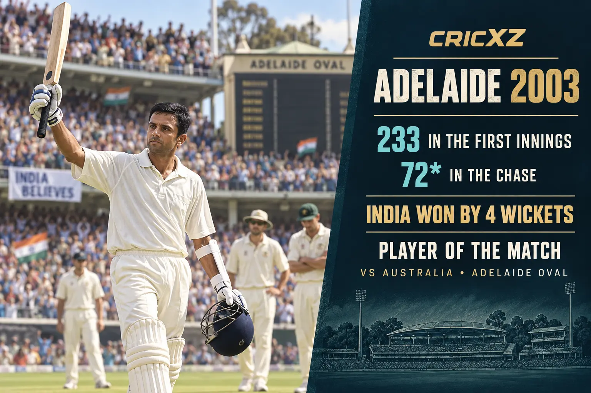

Test
- Matches
- 164
- Innings
- 286
- Not outs
- 32
- Runs
- 13,288
- Highest score
- 270
- Batting average
- 52.31
- Strike rate
- 42.51
- Hundreds
- 36
- Fifties
- 63
- Catches
- 210

Rahul Dravid scored 24,208 runs and 48 centuries across Test, ODI and T20I cricket. Nicknamed "The Wall", he built his career on exceptional technique, concentration and resilience.
Career statistics are final.
Dravid retired from international cricket in March 2012. The figures above were verified against ICC career records and ESPNcricinfo's statistical profile.
Dravid played 509 international matches and accumulated 24,208 runs. He was especially influential in Test cricket, where his technique against pace and spin helped India compete successfully in challenging overseas conditions.

Dravid scored 233 in India's first innings and an unbeaten 72 in the fourth-innings chase against Australia at Adelaide Oval. India won by four wickets, and Dravid was named Player of the Match for one of the defining performances of his career.
Dravid adapted his game to score 10,889 ODI runs and played a central role in India's run to the 2003 World Cup final. He also kept wicket in limited-overs cricket when team balance required it, completing 14 ODI stumpings in addition to his 196 catches.
20 June 1996 – 24 January 2012
Made 95 on Test debut against England at Lord's and played his final Test against Australia in Adelaide.
3 April 1996 – 16 September 2011
Debuted against Sri Lanka in Singapore and made his final ODI appearance against England in Cardiff.
31 August 2011
Scored 31 in his only T20 international, against England at Manchester.
Finished with 13,288 Test runs, 10,889 ODI runs and 31 T20I runs.
Scored 36 Test hundreds and 12 ODI hundreds.
Retired with the record for the most catches by a non-wicketkeeper in Test cricket.
Made 270 against Pakistan at Rawalpindi in 2004 as India completed a historic series victory.
Scored 318 runs and kept wicket as India reached the men's Cricket World Cup final.
Won both the ICC Player of the Year and Test Player of the Year awards.
Received India's national sporting honour for his achievements in cricket.
Was named among Wisden's five cricketers of the year.
Received India's fourth-highest civilian award.
Received India's third-highest civilian award.
Was inducted into the ICC Cricket Hall of Fame in recognition of his international career.
Later coached India to the 2024 men's T20 World Cup title.
Read Sachin Tendulkar's career records, explore Kapil Dev's all-round statistics, or browse all CricXZ player profiles.